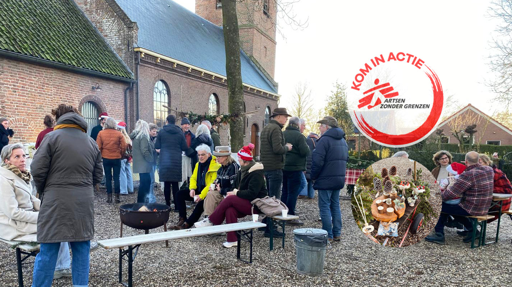
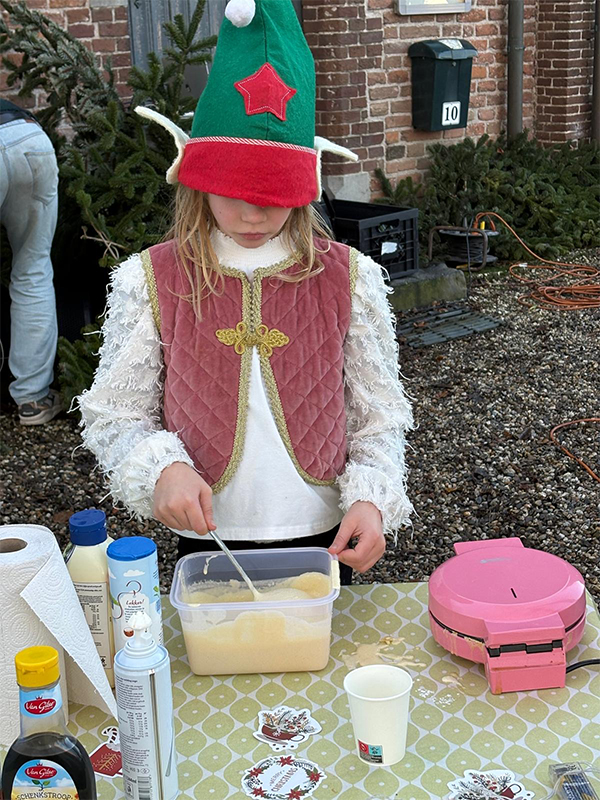
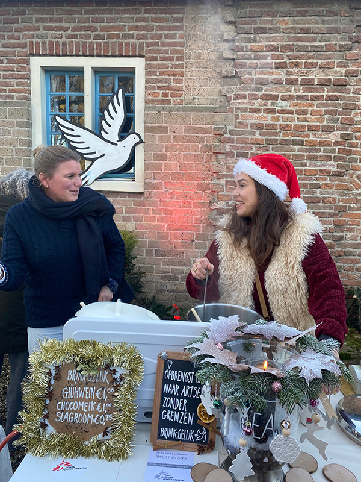
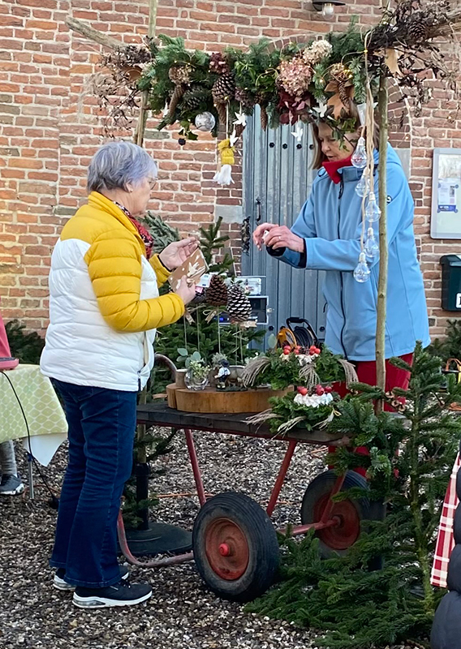
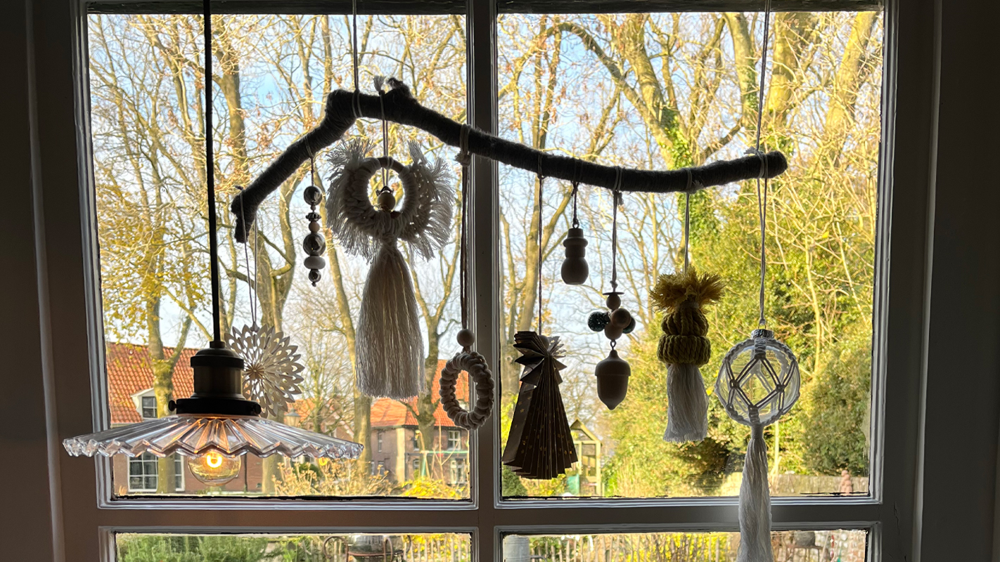
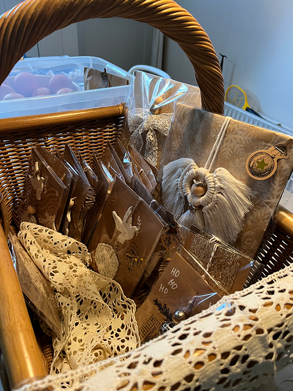
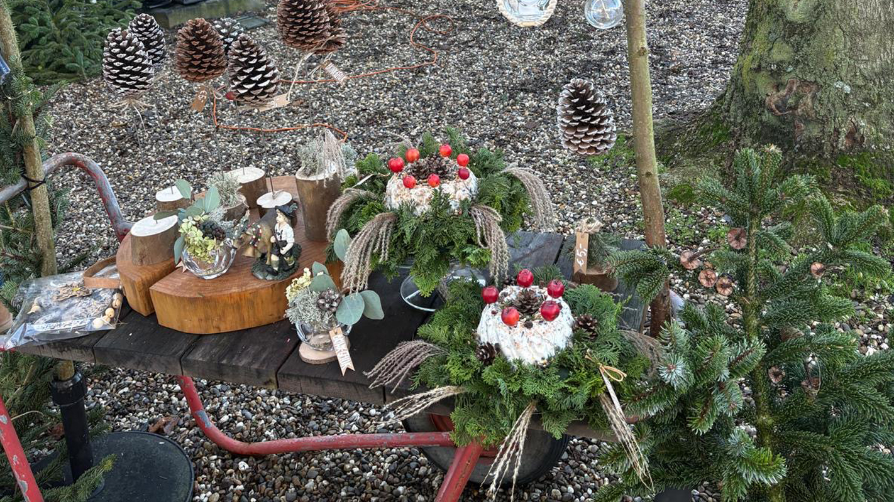

GEZELLIG SAMENZIJN
Tijdens de sfeervolle avonden voor kerst werden macramé, kerstversieringen, vredesduifjes en kerstkransen met de hand gemaakt. Wat begon als samen knutselen, groeide uit tot het hartverwarmende idee voor een kleine kerstmarkt, waarbij de volledige opbrengst bestemd werd voor Artsen zonder Grenzen.
Rond de kerk, met het sfeervolle schijnsel van de verlichte huizen op de achtergrond, creëerden we een plek van ontmoeting. Dankzij de helpende handen van enkele Brinkbewoners en het aanstekelijke enthousiasme van de kinderen, hadden we het heel gezellig met elkaar. We spraken de wens uit dat dit een feest mag zijn voor het hele dorp; een jaarlijkse kerstmarkt op de Brink. Sfeervol en waar we elkaar ontmoeten voor gezelligheid en het kerstgevoel met het hele dorp vieren.






